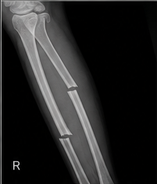
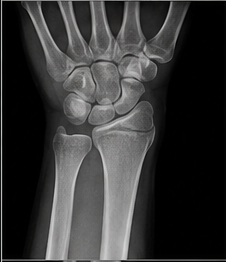
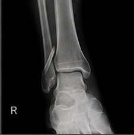
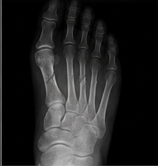
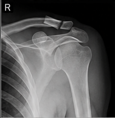
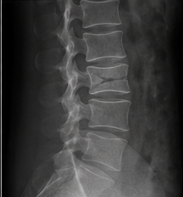

UHS COMMAND CENTRE
Clinical Command Desk
Quick access to all clinical tools, RP actions, and emergency pathways.
ABCDE
Primary assessment
Observations
Vitals and monitoring
Cardiac
ECG, arrest, ACS
Respiratory
Airway, breathing
Trauma
Major trauma, burns
Neurological
GCS, stroke, seizure
Emergencies
All emergency pathways
Procedures
Step-by-step guides
Medications
Drug reference
Equipment
Equipment library
Scenes
Incident scenarios
Documentation
Clinical notes
/me RP
Action builder
Pain
Pain management
Fluids
IV fluids
Blood
Transfusion
QUICK RP
Quick RP Actions
Your most recently used /me actions.
Add custom /me actions to see them here.
FAVOURITES
Favourite Actions
Your starred RP actions for quick access.
Star actions from your RP library to see them here.
EMERGENCY MODE
Emergency Pathways
One-click access to emergency protocols.
CA
Cardiac Arrest
MT
Trauma
CP
Chest Pain
S
Stroke
A
Anaphylaxis
R
Respiratory
RP reference: This is a FiveM roleplay toolkit, not real clinical guidance.
PDF DOCUMENT
Upload a PDF or PPTX file.
PATIENT OBSERVATIONS
Core observations
Move each slider to see the reading and its typical clinical meaning update live — including Blood Pressure. See the Pain page for the pain scale, management ladder and medication doses.
75bpm — Heart rate
16breaths/min — Respiratory rate
98% — Oxygen saturation (SpO₂)
37.0°C — Temperature
6.0mmol/L — Blood glucose
15/15 — Glasgow Coma Scale
❤ Blood Pressure
Blood pressure is recorded in mmHg as systolic/diastolic.
120/80mmHg
| Reading | RP meaning | What it may suggest |
|---|---|---|
| < 90/60 | Low BP / hypotension | May be significant if symptomatic: dizziness, weakness, confusion or fainting. |
| 90/60–120/80 | Common reference range | Often regarded as a healthy/ideal range, but context matters. |
| 120/80–139/89 | Raised / above ideal | Not automatically hypertension; repeat and consider the clinical context. |
| ≥ 140/90 in clinic | High BP | NICE uses this as the clinic threshold for further assessment/confirmation. |
| ≥ 180/120 | Severely raised | Needs urgent clinical assessment, particularly with concerning symptoms or signs of acute organ damage. |
Systolic
The top number. The highest pressure when the heart contracts and pumps blood.
Diastolic
The bottom number. The pressure when the heart relaxes between beats.
Important: A single BP reading does not by itself diagnose hypertension. NICE recommends repeat measurement and, where appropriate, ambulatory or home BP monitoring.
HRHeart rate
beats per minute (bpm)
RRRespiratory rate
breaths per minute
SpO₂Oxygen saturation
percentage (%)
BPBlood pressure
mmHg
TempTemperature
°C
GCSGlasgow Coma Scale
Eye / Verbal / Motor
BGLBlood glucose
mmol/L
PAINPain score
0–10
PDF DOCUMENT
Upload a PDF or PPTX file and it will be displayed here as a reference document.
PAIN
Pain reference
Score it, manage it, and know the doses — three tabs covering the whole picture.
0No pain
1–3Mild
4–6Moderate
7–9Severe
10Worst pain imaginable
Ask
“On a scale of 0 to 10, where 0 is no pain and 10 is the worst pain you can imagine, what is your pain right now?”
“Where is the pain?” “When did it start?” “What does it feel like?” “Does it move anywhere?” “What makes it better or worse?”
Reassess
Record the score before treatment and again afterwards. A useful RP note is: pain 8/10 → treatment → pain 4/10, together with the patient's clinical observations and response.
Important: pain severity alone does not determine which medication is safe. NICE recommends regular pain assessment and appropriate analgesia, with treatment selected according to the injury and patient factors.
Start with the cause, not just the number
A 9/10 headache, 9/10 abdominal pain, 9/10 chest pain and 9/10 fracture pain are not automatically treated identically. Assess ABCDE and look for the underlying cause before reaching for the ladder below — the score guides intensity, not the diagnosis.
Non-pharmacological options first (or alongside)
Splinting/immobilising an injury, positioning the patient comfortably, reassurance and calm communication, applying cold packs where appropriate, and simply reducing unnecessary movement all reduce pain — and cost nothing, carry no side effects, and work while you're preparing medication.
ADULT ACUTE PAIN • RP REFERENCE
What analgesia fits the pain score?
Use the score as a guide only. The injury, observations, age, weight, allergies, pregnancy, renal/hepatic function, bleeding risk and existing medicines can change the choice.
1–3
Mild
First-lineParacetamol 500 mg–1 g PO per dose, at least 4 hours apart.
Maximum usual adult dose: 4 g in 24 hours. Consider a lower maximum in people under 50 kg or with relevant risk factors.
Ibuprofen 200–400 mg PO can be considered when an NSAID is appropriate; common OTC maximum 1.2 g/day.
4–6
Moderate
Step up if requiredParacetamol 500 mg–1 g PO remains a base analgesic where appropriate.
For appropriate acute injuries/fractures, NICE recommends paracetamol + codeine for moderate pain. Co-codamol contains 500 mg paracetamol + 8, 15 or 30 mg codeine per tablet; adults can take 1–2 tablets up to 4 times/day, with 4–6 hours between doses and a maximum of 8 tablets/day.
Important: count the paracetamol in co-codamol toward the daily paracetamol maximum.
7–9
Severe
Stronger analgesia / escalationFor major trauma, NICE recommends IV morphine as first-line, adjusted to effect by an appropriately trained clinician.
A historical NICE acute-trauma evidence dosing approach describes an initial up to 5 mg IV, then 1–5 mg IV increments at 5-minute intervals, titrated to effect. This is not a universal fixed dose and requires appropriate monitoring and clinical authority.
For suspected long-bone fracture, NICE recommends IV paracetamol supplemented with IV morphine titrated to effect for severe pain.
10/10
Extreme / uncontrolled
Emergency assessmentDo not simply keep increasing tablets because the score is 10. Find and treat the cause, repeat ABCDE/observations and escalate.
For major trauma, use the severe-pain pathway with appropriately titrated IV opioid analgesia and monitoring. Consider specialist/anaesthetic support where pain remains uncontrolled.
Reassess pain, respiratory rate, SpO₂, consciousness and BP after opioid treatment.
Reassess, every time
Record the score before treatment and again afterwards — pain 8/10 → treatment → pain 4/10 is a genuinely useful RP note. If a treatment isn't working, escalate rather than repeating the same thing.
Escalate when
Pain remains severe/uncontrolled despite appropriate treatment, there are signs of a serious underlying cause, or the patient needs analgesia beyond what's within your own scope — hand over to a senior clinician rather than pushing further alone.
Adult dose quick table
| Medicine | Typical adult dose | Interval / maximum | Role in RP |
|---|---|---|---|
| Paracetamol | 500 mg–1 g PO | ≥4 hours; max 4 g/24h usual adult regimen | Mild pain; base analgesic for many acute injuries |
| Ibuprofen | 200–400 mg PO | ≥4 hours; OTC max 1.2 g/day | Inflammatory/musculoskeletal pain when NSAID appropriate |
| Co-codamol | 1–2 tablets of 8/500, 15/500 or 30/500 | 4–6 hours; max 8 tablets/24h | Moderate pain when appropriate; prescription strengths require clinician direction |
| IV morphine | Major-trauma titration: initial up to 5 mg, then 1–5 mg increments | 5-minute reassessment/titration in the cited acute-trauma approach | Severe major-trauma pain; monitored clinical setting |
Do not use pain score alone: a 9/10 headache, 9/10 abdominal pain, 9/10 chest pain and 9/10 fracture are not automatically treated identically. Assess the cause and the patient's ABCDE/observations first.
See the main Medications page for the full reference on each of these drugs, including contraindications and monitoring.
PDF DOCUMENT
Upload a PDF or PPTX file and it will be displayed here as a reference document.
PRIMARY ASSESSMENT
ABCDE
Airway
Is the airway patent? Look/listen for obstruction. Consider airway positioning and appropriate basic airway measures.
Breathing
Assess respiratory rate, effort, chest movement, SpO₂ and signs of respiratory distress.
Circulation
Check pulse, BP, skin/perfusion, major haemorrhage and cardiac rhythm where appropriate.
Disability
Assess consciousness (e.g. AVPU/GCS), pupils and blood glucose where indicated.
Exposure
Look for injuries, rashes, bleeding or other findings while maintaining dignity, warmth and privacy.
PDF DOCUMENT
Upload a PDF or PPTX file and it will be displayed here as a reference document.
HIGH PRIORITY
Emergency quick reference
Cardiac arrest
Check for no more than 10 seconds — unresponsive and not breathing normally means starting CPR immediately. Compress at 100–120/min, 5–6cm depth, minimal interruptions. Attach the AED/defibrillator as soon as available and follow its prompts. See the Cardiac page for the full arrest algorithm, drugs and RP library.
Severe bleeding
Apply firm direct pressure with a dressing first. If a limb bleed continues, apply a tourniquet high and tight and note the application time. Consider haemostatic packing for junctional or non-limb wounds. Reassess for shock — pulse, skin colour, capillary refill, BP — and escalate rapidly.
Stroke
Use FAST — Face drooping, Arm weakness, Speech difficulty, Time symptoms started — to screen quickly. Check capillary glucose to rule out hypoglycaemia as a mimic. Establish the exact time last seen well, since it determines thrombolysis/thrombectomy eligibility, and pre-alert the stroke unit.
Anaphylaxis
Look for sudden airway swelling, stridor, wheeze or persistent hypotension alongside a likely trigger. Give IM adrenaline into the anterolateral thigh without delay. Lie the patient flat with legs raised (or sitting if breathless), and repeat adrenaline after 5 minutes if there's no improvement.
Seizure
Note the exact start time, move hazards away and cushion the head rather than restraining the patient. Most seizures self-terminate within 2–3 minutes. A seizure lasting beyond 5 minutes, or repeating without recovery in between, is status epilepticus and needs urgent escalation for benzodiazepine treatment.
Chest pain
Take a SOCRATES-style pain history, obtain a 12-lead ECG within 10 minutes where possible, and give oxygen only if hypoxic. See the Cardiac page for the full ACS assessment pathway, RP library and medication doses.
Sepsis
Suspect sepsis where there's a likely infection source plus a red flag — new confusion, systolic BP ≤90, HR >130, RR ≥25, non-blanching rash, or no urine output in 18 hours. Start the "Sepsis Six" within the hour where within scope: oxygen, cultures, IV antibiotics, IV fluids, lactate and urine output monitoring.
PDF DOCUMENT
Upload a PDF or PPTX file and it will be displayed here as a reference document.
TRAUMA
Trauma reference
Initial priorities
- Scene safety and PPE
- Catastrophic haemorrhage
- Airway with cervical-spine considerations where indicated
- Breathing and chest injuries
- Circulation and shock
- Neurological status
- Exposure and full injury survey when appropriate
- Repeat observations and reassessment
🧠
Head Injury
Repeat GCS matters more than a single reading — watch the trend, and keep spinal precautions in mind given the mechanism.
Recognise
Any loss of consciousness, amnesia, vomiting, seizure activity, severe headache, GCS below 15, or a focal neurological deficit.
Signs of skull fracture
Battle's sign (bruising behind the ear), "panda eyes" (bruising around the eyes), CSF leak from the nose or ear, or haemotympanum.
Urgent CT criteria
GCS below 13 initially, GCS below 15 at 2 hours, suspected open/depressed skull fracture, signs of a basal skull fracture, a post-traumatic seizure, focal neurological deficit, more than one episode of vomiting, or being on anticoagulants with any head injury.
🫀
Chest Injury
An open chest wound and a flail segment both need specific handling — don't just treat every chest injury the same way.
Recognise
Pain worse on breathing, bruising or wounds to the chest wall, paradoxical (flail) chest wall movement, reduced or absent breath sounds on one side, tracheal deviation, or surgical emphysema (crackling under the skin).
Key patterns
Flail chest, simple or tension pneumothorax, haemothorax, open (sucking) chest wound, pulmonary contusion, and rib fractures.
Open chest wound
Cover with a dressing sealed on three sides, allowing air to escape but not re-enter, and watch closely for an evolving tension pneumothorax.
🩻
Abdominal & Pelvic Trauma
A normal-looking abdomen early on doesn't rule out serious internal bleeding — reassess repeatedly.
Recognise
Abdominal tenderness, guarding or distension, bruising (including a seatbelt mark), pelvic pain or instability, blood at the urethral meatus, or a leg length discrepancy.
Pelvic fracture
Handle gently — avoid repeatedly "springing" or manipulating the pelvis, which can dislodge a forming clot and worsen bleeding. Apply a pelvic binder at the level of the greater trochanters if indicated.
Solid organ injury
Spleen or liver injury can cause substantial concealed blood loss while the abdomen still looks relatively normal early on.
🦴
Spinal Injury
Once spinal injury is suspected, minimise movement and keep the spine aligned until it's safe to clear.
Consider the mechanism
Falls from height, diving injuries, RTCs, direct blows to the spine, or any significant axial-loading mechanism.
Assess for
Spinal tenderness, deformity or a step on gentle palpation, and any neurological symptoms — weakness, numbness, tingling, or loss of bladder/bowel control.
Log roll
Used to examine the back and move the patient onto a board/scoop while keeping the spine aligned — needs a coordinated team, with one person controlling the head and neck.
🦾
Joint Dislocations
Often obvious on inspection, but the real priority is checking what's happening below the joint — never skip the neurovascular check.
Shoulder
The most commonly dislocated joint, usually anteriorly, from a fall onto an outstretched arm or a direct blow. The arm is typically held slightly away from the body and resists movement — check the "regimental badge" area on the outer shoulder for axillary nerve sensation.
Finger
Usually at an interphalangeal joint from a direct blow or hyperextension — a "jammed finger." Deformity is often obvious; check circulation and sensation before and after any reduction attempt.
Elbow
Usually posterior, from a fall onto an outstretched hand. Document the radial pulse and hand sensation before and after, given the risk to the brachial artery and nerves running close by.
Hip
Most commonly posterior — classically a "dashboard injury" in a road traffic collision. The leg is typically shortened, flexed and internally rotated. Time-critical, given the risk to the blood supply of the femoral head.
Patella (kneecap)
Usually dislocates laterally, often during a sporting twisting injury, with the kneecap visibly displaced to the outer side of the knee.
Ankle
Often accompanies a fracture (fracture-dislocation). Look for gross deformity and check circulation urgently, since the skin can be at risk from pressure over a displaced bone.
Jaw (TMJ)
Can follow a wide yawn, a direct blow, or dental treatment. The patient is often unable to close their mouth and may have difficulty speaking.
General principles
Dislocations are often obvious on inspection, but always check and document distal circulation, sensation and movement before and after any reduction attempt. Reduction should only be attempted by someone trained and appropriately supervised, within their scope — support and splint rather than attempt reduction otherwise.
STEP-BY-STEP
Guide
PATIENT QUESTIONS
Ask the patient directly
/me LIBRARY
RP actions
Use the two tabs to copy the exact command format you need.
FRACTURE GUIDE
Fractures & broken bones
A complete visual study reference — patterns, recognition, assessment, management, red flags and healing — plus a structured checklist and /me + F8 RP library.
Transverse
The fracture line runs approximately straight across the bone. Usually caused by a direct blow or a force applied at a right angle to the bone.
Linear
A crack running parallel to the bone's long axis rather than across it. Often from a direct impact, and can be easy to miss on a quick look.
Oblique (non-displaced)
The fracture line crosses the bone at an angle, with fragments remaining in reasonable alignment.
Oblique (displaced)
The same angled break pattern, but the fragments have shifted out of alignment — often visibly deformed, and usually needing reduction.
Spiral
A twisting force creates a fracture line that winds around the bone. Common in sporting injuries, and a pattern worth being alert to when the mechanism described doesn't fit, particularly in children.
Greenstick
An incomplete fracture in which one side bends while the other side breaks. Seen almost exclusively in children, whose bones are more flexible than an adult's.
Comminuted
The bone is divided into three or more major fragments, usually from high-energy trauma such as a fall from height or a road traffic collision.
Segmental
Two separate fracture lines create an isolated segment of bone trapped between them.
Buckle / torus
The bone cortex buckles or compresses without a complete break. Commonly seen in children.
Impacted
One fracture fragment is driven into another, often compacting and shortening the bone slightly.
Compression
The bone is crushed or compressed, often producing a shortened or collapsed appearance — typically seen in the spine.
Avulsion
A small piece of bone is pulled away by a tendon or ligament, usually at the point where it attaches.
Displacement & alignment
A non-displaced fracture remains substantially aligned, whereas a displaced fracture has fragments that have moved. Clinicians describe this using translation, angulation, shortening and rotation — alignment matters because it affects stability, healing, and nerve or vessel function.
Open vs closed fractures
A closed fracture doesn't communicate with the outside through a wound. An open fracture has a wound communicating with the fracture site — bone may or may not be visible — and is urgent because of contamination and infection risk. Never push exposed bone back in or attempt to straighten the limb; control bleeding without pressing on exposed bone, cover the wound, and keep the limb as still as possible.
Recognising a suspected fracture
Pain (especially with movement/loading), swelling or bruising, deformity or an abnormal angle, reduced or abnormal movement, loss of normal function, shortening or rotation, an associated wound or bleeding, numbness or tingling, and abnormal colour or temperature beyond the injury. The appearance of an injury can't reliably confirm or exclude a fracture — a person may still be able to move an injured limb despite one. Don't deliberately test for crepitus or instability.
Neurovascular assessment — P-C-C-M-S
Pulse — assess distal pulse, compare with the unaffected side. Colour — check for pallor, blue/grey colour or other changes. Capillary refill — assess distal perfusion where appropriate. Movement — gentle movement only when safe, never force a painful/deformed injury. Sensation — check for numbness, tingling or altered sensation distal to the injury. Record findings before and after immobilisation, and report any deterioration promptly.
Immobilisation principles
Support the injured limb rather than repeatedly manipulating it. Support the joints above and below the suspected fracture where practical, and use padding to protect pressure points. Don't force a deformed limb straight or push exposed bone beneath the skin. Remove rings, watches and other constrictive items early, since swelling can increase. Recheck circulation and sensation after applying support or a splint.
Diagnosis & X-ray terminology
Diagnosis combines history, mechanism, examination and imaging when indicated. AP (anteroposterior) — the X-ray beam passes front to back. Lateral — a side projection. Oblique — an angled projection used when extra detail is needed. CT/MRI may be used for selected injuries.
Casting
A cast is only appropriate for limb fractures that are stable and non-displaced (or reduced first) — not for ribs, spine, skull or most shoulder injuries. Apply padding before the casting material, hold the joint in the correct functional position while it sets, and never wrap it too tight. Check it fits two fingers comfortably at the top, elevate the limb afterwards, and give clear cast-care advice (keep dry, don't insert objects, seek help urgently for worsening pain, numbness or colour change).
Acute compartment syndrome: a time-critical condition where pressure rises inside a closed muscle compartment and threatens blood flow and tissue viability. Watch for rapidly increasing or severe pain — particularly pain disproportionate to the apparent injury — pain with passive stretch, tense/markedly swollen tissue, numbness or pins and needles, and weakness. Don't wait for a late absent pulse before taking action — suspected compartment syndrome needs urgent emergency assessment.
When to call 999
Open fracture or visible bone, severe/uncontrolled bleeding, major deformity or suspected severe displacement, absent or markedly reduced distal circulation, new significant numbness/weakness, signs of shock, suspected spinal/pelvic/major long-bone injury, severe head injury or altered consciousness, breathing difficulty, or possible compartment syndrome.
Complications
Compartment syndrome, nerve injury, vascular injury, infection (especially open fractures), fat embolism syndrome (rare, associated with major long-bone trauma), delayed union/non-union, malunion, stiffness/reduced function, and post-traumatic arthritis in joint-surface injuries.
Clavicle
Often follows a fall or impact to the shoulder. Pain, swelling and deformity may occur.
Humerus
Upper-arm fractures can affect nearby nerves and vessels, so distal neurovascular checks are important.
Wrist / distal radius
Often occurs after a fall onto an outstretched hand; swelling and deformity may be present.
Hip / femoral neck
Particularly important in older adults after low-energy falls — inability to bear weight and a shortened/externally-rotated leg can occur.
Femur
A major long-bone injury that can be associated with substantial blood loss.
Ankle
Twisting injuries can fracture one or both malleoli, causing significant swelling and pain.
Ribs
Pain is often worse with breathing or coughing; assess for associated chest injury.
Bone healing
Inflammatory: a haematoma forms, inflammatory signalling begins. Repair/soft callus: fibrous and cartilaginous tissue bridges the fracture. Hard callus/consolidation: new bone progressively strengthens the site. Remodelling: bone is reshaped over time. Healing time varies with the bone, pattern, blood supply, age, smoking, nutrition and treatment.
Learning cases
Wrist: fall from a bike, swollen deformed wrist — assess circulation/sensation, immobilise, arrange imaging. Hip: older adult, severe pain, can't weight-bear — minimise movement, urgent assessment. Open tibia: high-energy injury, deformed leg, open wound — bleeding control, wound protection, never push bone back in. Compartment syndrome: worsening pain and tight swelling after a lower-leg fracture — urgent emergency assessment.
Real X-ray examples matched to the fracture patterns covered in this guide.

Transverse fracture
Lower leg (tibia/fibula) — the fracture line runs straight across both bones.

Colles fracture
Wrist / distal radius — the classic fracture from a fall onto an outstretched hand.

Oblique fracture
Ankle — an angled fracture line through the distal fibula.

Spiral fracture
Foot — a helical fracture line from a twisting force.

Comminuted fracture
Shoulder / proximal humerus — the bone is broken into multiple fragments.

Compression fracture
Spine (lumbar) — a vertebral body has collapsed/wedged under compressive force.
Additional regions, shown as schematic illustrations rather than real X-ray photographs.
Hand — Boxer's fracture
5th metacarpal neck — the classic closed-fist punching injury, with visible angulation.
Finger — Phalanx fracture
A break within the shaft of a finger bone, distinct from the normal joint spaces above and below it.
Arm — Forearm fracture
Both-bone (radius/ulna) forearm fracture — common from a direct blow or fall.
Ribs — Rib fracture
Pain worse on breathing/coughing — assess for associated chest injury.
Foot — Metatarsal fracture
5th metatarsal (Jones-type) — common from an inversion/twisting injury.
Head — Linear skull fracture
A crack through the skull vault without displacement — needs urgent head-injury assessment.
STEP-BY-STEP
Assessing & managing a fracture
PATIENT QUESTIONS
Ask the patient directly
FRACTURE /me LIBRARY
Fracture assessment & splinting RP actions
Use the two tabs to copy the exact command format you need.
RP realism note: Reflects general, publicly-known fracture classification and first-aid/paramedic management for roleplay realism and revision only — not real clinical guidance, diagnosis or treatment authorisation.
PDF DOCUMENT
Upload a PDF or PPTX file and it will be displayed here as a reference document.
RESPIRATORY
Respiratory & airway
Look
Work of breathing, respiratory rate, cyanosis, posture, accessory muscle use and ability to speak.
Listen
Wheeze, stridor, reduced air entry and other abnormal breath sounds.
Measure
SpO₂, RR, HR, BP and temperature; consider peak flow or other tests where appropriate.
Reassess
Document response to treatment and repeat observations rather than relying on one reading.
🔵
Airway Management
Work up the airway ladder — always use the simplest device that does the job, escalating only when it isn't enough.
The airway ladder
Positioning & basic manoeuvres → basic adjuncts (OPA/NPA) → supraglottic device (i-gel/LMA) → definitive airway (ETT) → surgical airway. Move up only as far as needed, and always be ready to step back down if a simpler option becomes adequate again.
Basic manoeuvres
Head-tilt, chin-lift — first-line for a medical patient with no trauma concern. Jaw thrust — used instead where cervical spine injury is suspected, since it avoids neck extension; push the angles of the jaw forward with both hands while a colleague stabilises the neck.
Oropharyngeal airway (OPA / Guedel)
Holds the tongue off the posterior pharyngeal wall. Only tolerated by a deeply unconscious patient with no gag reflex — if they gag, it's the wrong choice.
- Sizing: measure from the corner of the mouth to the angle of the jaw (or the earlobe)
- Size 000–00: neonate
- Size 0–1: infant/small child
- Size 2: child / small adult
- Size 3: average adult female
- Size 4: average adult male
- Size 5: large adult
- Insertion (adult): concave-up, rotate 180° as it passes the soft palate
- Insertion (child): right-way-up under direct vision with a tongue depressor — don't rotate, the smaller mouth risks soft-tissue injury
Nasopharyngeal airway (NPA)
Better tolerated than an OPA in a patient with some gag reflex remaining.
- Sizing: diameter roughly matches the patient's little finger/nostril
- ~6mm: smaller adult
- ~7mm: average adult
- ~8mm: larger adult
- Length: nostril to the tragus of the ear, plus a safety pin/flange so it can't disappear into the nose
- Avoid with a suspected base-of-skull fracture or significant mid-face trauma
Supraglottic airway (i-gel / LMA)
Sits above the vocal cords — a better seal than basic adjuncts, without needing laryngoscopy. A step up from basic airways, a step below full intubation.
- Sizing is by patient weight:
- Size 1: <5kg (neonate)
- Size 1.5: 5–12kg (infant)
- Size 2: 10–25kg (small child)
- Size 2.5: 25–35kg (large child)
- Size 3: 30–60kg (small adult)
- Size 4: 50–90kg (medium/large adult)
- Size 5: >90kg (large adult)
- Insertion: lubricate, slight neck extension (unless trauma), slide along the hard palate in one smooth movement until resistance is felt
Endotracheal tube (ETT)
The definitive airway — protects against aspiration and allows full ventilatory control.
- Adult sizing (internal diameter, cuffed): 7.0–7.5mm average female, 7.5–8.5mm average male
- Paediatric sizing (uncuffed): (age in years ÷ 4) + 4 — for a cuffed tube, subtract roughly 0.5
- Depth at the lips (oral): approximately 3 × the internal diameter (e.g. a 7.5mm tube sits around 22–23cm) — always confirm with capnography, and a chest X-ray in hospital
- Cuff pressure: keep within roughly 20–30 cmH₂O to avoid tracheal mucosal damage
Surgical airway (cricothyroidotomy)
Last resort for a "can't intubate, can't oxygenate" emergency, when no other airway can be secured.
- Landmark: the cricothyroid membrane, between the thyroid and cricoid cartilage
- Typical adult tube size: approximately 6mm internal diameter for a surgical technique
- Rare, high-stakes, and requires specific training — not a routine step on the ladder
STEP-BY-STEP
Working through the airway ladder
TEAM / HANDOVER QUESTIONS
Confirm before escalating
AIRWAY /me LIBRARY
Airway management RP actions
Use the two tabs to copy the exact command format you need.
RP realism note: Reflects general, publicly-known airway management principles and typical device sizing for roleplay realism and revision only — not real clinical guidance. Always follow your actual training and your service's protocols.
PDF DOCUMENT
Upload a PDF or PPTX file and it will be displayed here as a reference document.
CARDIAC
Cardiac assessment & care
A structured UK ambulance-style approach to suspected cardiac chest pain and cardiac arrest, for RP realism. This is not real clinical guidance — follow your actual training and your service's own protocols.
❤
Suspected cardiac chest pain / ACS
SOCRATES-based chest pain history, early 12-lead ECG, oxygen only if hypoxic, aspirin where indicated, and early escalation of red flags.
Recognise ACS
Central/retrosternal chest pain or discomfort, often heavy, tight or crushing, which may radiate to the arm, jaw, neck or back. May come with sweating, nausea, breathlessness or a sense of impending doom. Older patients, women and people with diabetes can present atypically with little or no pain.
Oxygen & monitoring
Current UK guidance does not support routine high-flow oxygen in a normoxic patient — only give supplemental oxygen if SpO₂ is below the target range (commonly under 94%, lower in known COPD). Attach continuous cardiac monitoring and repeat observations regularly.
12-lead ECG
Obtain and review a 12-lead ECG as early as possible, ideally within 10 minutes of first contact. Look for ST-segment elevation or depression, T-wave inversion and any new left bundle branch block. Compare against a previous ECG where one is available.
Escalate early
Ongoing pain despite treatment, a dynamic or abnormal ECG, haemodynamic instability or a new arrhythmia are red flags. Escalate to a senior clinician/cardiology promptly and pre-alert the receiving unit.
ECG territories
Inferior changes (II, III, aVF) suggest the right coronary artery; anterior changes (V1–V4) suggest the LAD; lateral changes (I, aVL, V5–V6) suggest the circumflex. Reciprocal ST depression in the opposite leads supports a genuine STEMI over a mimic.
Risk stratification
Tools like the HEART score (ED chest pain risk) and GRACE score (in-hospital/6-month risk in confirmed ACS) exist locally to help guide admission, early discharge or invasive management decisions alongside clinical judgement.
🚑
Cardiac arrest & resuscitation
Early recognition, high-quality CPR, early defibrillation and treating reversible causes give the patient the best chance of a good outcome.
Recognise arrest
Unresponsive and not breathing normally, or only making agonal/gasping breaths. Check for no more than 10 seconds — don't delay starting compressions to keep re-checking.
Compressions
Centre of the chest, rate 100–120 per minute, depth 5–6cm, allowing full chest recoil between compressions. Minimise interruptions and swap the compressor role roughly every 2 minutes to maintain quality.
Defibrillation
Attach the AED/defibrillator as soon as it's available and follow its prompts. Stand clear during rhythm analysis and shock delivery, then resume compressions immediately afterwards.
Reversible causes
Consider the 4 Hs — Hypoxia, Hypovolaemia, Hypo/hyperkalaemia & metabolic causes, Hypothermia — and the 4 Ts — Thrombosis, Tamponade, Toxins, Tension pneumothorax.
Post-ROSC care
Target SpO₂ 94–98% (avoid hyperoxia) and normal CO₂ levels. Consider temperature management per local protocol, obtain a 12-lead ECG, and arrange urgent cardiology referral if a STEMI cause is likely.
Team dynamics
A clear team leader, closed-loop communication, and rotating compressors every 2 minutes keep quality high. Rhythm and pulse checks happen at each 2-minute cycle, in the pause immediately before or after a shock.
STEP-BY-STEP CHECKLIST
Checklist
PATIENT / BYSTANDER QUESTIONS
Ask directly
CARDIAC /me LIBRARY
Cardiac-specific RP actions
Each category has its own actions. Use the two tabs to copy the exact command format you need.
RP realism note: Reflects general UK ambulance-style teaching (Resuscitation Council UK / NICE-informed) for roleplay realism only — not real clinical guidance.
PDF DOCUMENT
Upload a PDF or PPTX file and it will be displayed here as a reference document.
NEUROLOGICAL
Neurological assessment
Consciousness
Use AVPU for a rapid assessment and GCS when a more detailed assessment is required.
Pupils
Record size, equality and reaction to light.
Glucose
Check blood glucose when altered consciousness or other clinical indications make it relevant.
Stroke screen
Assess facial movement, arm strength and speech/language changes, noting exact onset/last-known-well time.
PDF DOCUMENT
Upload a PDF or PPTX file and it will be displayed here as a reference document.
MEDICATION REFERENCE
Common UK Emergency / Acute Medications
Adult reference doses for serious-RP realism. Routes, contraindications, monitoring and local ambulance/Trust protocols still matter.
RP safety note: These are real human doses and are included for realism. Do not use this page as a prescribing guide in real life. Real dosing can change with age, weight, pregnancy, renal/hepatic function, allergies, indication, route and local protocol. For real clinical practice use the current BNF, local formulary and current UK guidance.
PARACETAMOLAnalgesic / antipyretic
Mild–moderate pain / fever
Adult oral: 500 mg–1 g per dose, at least 4 hours apart; maximum 4 g in 24 hours for the usual adult regimen.
Use in RP: headache, minor trauma, mild musculoskeletal pain, fever.
Check first: other paracetamol-containing medicines, liver disease, low body weight and previous doses.
/me checks the patient's allergies, previous paracetamol doses and history before offering oral paracetamol — /e examine
IBUPROFENNSAID
Pain + inflammation
Adult oral OTC: 200–400 mg per dose, up to 3 times daily, at least 4 hours apart; maximum 1,200 mg/day for common OTC use.
Use in RP: sprains, strains, inflammatory musculoskeletal pain and some minor injuries when appropriate.
Avoid/caution: NSAID allergy, previous ulcer, kidney disease, some asthma, anticoagulants and pregnancy; do not combine with another NSAID.
/me checks the patient for NSAID allergies, ulcer history, kidney problems and anticoagulant use before offering ibuprofen — /e check
MORPHINEStrong opioid analgesic
Severe / major-trauma pain
Adult trauma: NICE recommends IV morphine as first-line analgesia for major trauma, with the dose titrated to effect by an appropriately trained clinician.
RP reference example: a documented IV titration may use small incremental doses rather than one large fixed dose. Historical NICE evidence describes an initial up-to-5 mg IV dose followed by 1–5 mg increments at 5-minute intervals, titrated to effect.
Monitor: respiratory rate, SpO₂, consciousness, BP and pain; use particular caution with shock, frailty and older patients.
/me assesses the patient's severe pain, checks airway and breathing, then draws up titrated IV morphine — /e inject
ENTONOXInhaled analgesic (50:50 N₂O/O₂)
Immediate / procedural pain relief
Use: self-administered via a demand valve, titrated to effect by the patient's own breathing — commonly used for moderate–severe pain such as fracture movement, transport or short procedures while stronger analgesia is prepared.
Use in RP: a quick first-line option in a conscious, cooperative patient who can hold and use the mouthpiece themselves.
Avoid/caution: reduced consciousness, suspected pneumothorax, recent diving/decompression illness, some head injuries and where the patient cannot self-administer.
/me explains the Entonox demand valve, hands it to the patient and monitors their self-administration — /e nurse
CODEINE PHOSPHATEWeak opioid analgesic
Mild–moderate pain
Adult oral: 30–60 mg per dose, every 4 hours when required; usual maximum 240 mg in 24 hours.
Use in RP: moderate pain not settling with paracetamol/NSAID alone, where co-codamol isn't appropriate or a standalone dose is wanted.
Check first: opioid sensitivity, constipation risk, drowsiness/driving advice and other sedating medicines.
/me checks the patient's pain score and current medication before offering codeine phosphate for moderate pain — /e check
CO-CODAMOLCombination analgesic (paracetamol + codeine)
Moderate pain
Adult oral: 1–2 tablets of 8/500, 15/500 or 30/500 (mg codeine/mg paracetamol), up to 4 times daily, with 4–6 hours between doses; maximum 8 tablets in 24 hours.
Use in RP: moderate pain — NICE recommends paracetamol + codeine for appropriate acute injuries/fractures when paracetamol alone isn't enough.
Check first: this already contains a full paracetamol dose — never give alongside separate paracetamol tablets, or the daily paracetamol maximum can be exceeded without realising. Opioid sensitivity and constipation risk also apply, as with codeine alone.
/me confirms the patient's paracetamol history and offers co-codamol for moderate pain within limits — /e examine
NAPROXENNSAID
Pain + inflammation
Adult oral: commonly 500 mg initially, then 250–500 mg twice daily; usual maximum 1,000 mg/day.
Use in RP: musculoskeletal/inflammatory pain where a longer-acting NSAID is preferred over ibuprofen.
Avoid/caution: NSAID allergy, previous ulcer, kidney disease, some asthma, anticoagulants and pregnancy; do not combine with another NSAID.
/me checks for NSAID allergies, ulcer history, kidney problems and blood thinners before offering naproxen — /e check
TRAMADOLOpioid analgesic
Moderate–severe pain
Adult oral: 50–100 mg per dose, every 4–6 hours when required; usual maximum 400 mg in 24 hours.
Use in RP: moderate–severe pain where a stronger oral opioid is appropriate but IV morphine isn't required.
Check first: opioid/serotonergic medicines (interaction risk), seizure history, renal/hepatic impairment and sedation risk.
/me reviews the patient's medications and seizure history before offering oral tramadol — /e notepad
FENTANYL (INTRANASAL)Potent opioid analgesic
Severe pain, no IV access
RP reference: an initial intranasal dose (commonly cited around 50–100 micrograms in adults) can be used for severe pain before IV access is established, titrated according to response and local protocol.
Use in RP: severe pain in a patient without IV access yet, or where a fast-acting option is needed, including some paediatric protocols by weight.
Monitor: respiratory rate, SpO₂, consciousness and sedation; use particular caution in the frail, elderly or opioid-naive.
/me assesses severe pain, checks IV access and prepares intranasal fentanyl — /e inject
KETAMINEDissociative anaesthetic / analgesic
RSI induction / severe trauma pain
Induction dose: 1–2 mg/kg IV, immediately followed by the paralytic in an RSI.
Analgesic dose: low, sub-dissociative IV increments (commonly cited around 10–20 mg), titrated by an appropriately trained/critical-care paramedic for severe pain not controlled by other analgesia — entrapment, severe trauma pain, or where IV access makes other options difficult.
Check first: known allergy, and caution with significantly raised BP. It's a controlled drug — document carefully, and monitor consciousness, airway, BP, HR and psychomimetic/emergence effects.
/me draws up ketamine, confirms the dose with a second clinician and administers for RSI induction — /e inject
FENTANYLOpioid (RSI co-induction)
Blunts the response to laryngoscopy
RSI dose: 1–3 micrograms/kg IV, given just before the induction agent.
RP use: given first in the RSI sequence, ahead of the induction agent and paralytic, to blunt the surge in heart rate/blood pressure that laryngoscopy triggers.
Check first: allergy, and caution with hypotension or reduced consciousness — combined with the other RSI drugs it adds to respiratory depression.
/me gives IV fentanyl as a co-induction agent ahead of the induction agent and paralytic — /e inject
PROPOFOLIV anaesthetic (induction)
RSI/anaesthetic induction
RSI/induction dose: 1.5–2.5 mg/kg IV, immediately followed by the paralytic.
RP use: the common in-hospital/theatre alternative to ketamine for RSI induction.
Check first: allergy (egg/soy lecithin component), and significant hypotension/shock — it causes more of a BP drop than ketamine, so ketamine is often preferred in haemodynamically unstable patients.
/me gives IV propofol as the induction agent then immediately follows with the paralytic — /e inject
ROCURONIUMNon-depolarising paralytic
RSI paralysis
RSI dose: 1–1.2 mg/kg IV — a higher dose than routine theatre use, chosen for rapid onset (around 60 seconds).
RP use: the standard RSI paralytic where reversal may be needed — sugammadex can reverse it if intubation fails and the patient needs to resume breathing sooner.
Check first: known allergy (rare but can cause anaphylaxis), and have a clear backup airway plan given its longer duration than suxamethonium.
/me gives IV rocuronium as the paralytic immediately after the induction agent — /e inject
SUXAMETHONIUMDepolarising paralytic
RSI paralysis (rapid offset)
RSI dose: 1–1.5 mg/kg IV.
RP use: very rapid onset (30–60 seconds) and short duration — historically preferred for RSI, since paralysis wears off quickly on its own if intubation isn't successful.
Check first: contraindicated with hyperkalaemia risk (burns, crush injury, neuromuscular disease), malignant hyperthermia risk, and known allergy.
/me gives IV suxamethonium as the rapid-onset paralytic immediately after induction — /e inject
MIDAZOLAMBenzodiazepine
Sedation / status epilepticus
Sedation: 1–2 mg IV increments, titrated to effect.
Status epilepticus: 10 mg IV or buccal.
Check first: airway/breathing status before giving — it can cause respiratory depression, especially with recent opioids. Have airway equipment and reversal (flumazenil) available.
/me confirms airway and breathing, then titrates IV midazolam while monitoring closely — /e examine
DIAZEPAMBenzodiazepine
Sedation / anxiety / seizure
Sedation/anxiety: 2–10 mg IV or PR, titrated to effect.
Status epilepticus: 10–20 mg IV or PR, given slowly.
RP use: longer-acting alternative to midazolam for ongoing sedation, anxiety relief, or seizure management.
Check first: respiratory depression risk, especially with other sedatives or alcohol. Have airway equipment available. Avoid in narrow-angle glaucoma.
/me assesses respiratory status and current medications before giving slow IV diazepam — /e examine
LORAZEPAMBenzodiazepine
Sedation / status epilepticus
Sedation: 1–4 mg IV/IM, titrated to effect.
Status epilepticus: 4 mg IV, can repeat once after 10–15 minutes if needed.
RP use: shorter-acting alternative for procedural sedation or seizure control, with good absorption via multiple routes.
Check first: airway assessment before administration — respiratory depression is dose-dependent and additive with other CNS depressants.
/me assesses the patient's airway and breathing before giving IV lorazepam — /e check
HALOPERIDOLAntipsychotic
Agitation / sedation
Adult IM/IV: 2.5–10 mg, titrated to effect.
RP use: useful for acute agitation or psychosis where verbal de-escalation alone isn't enough. Often preferred over benzodiazepines in older patients where fall risk and respiratory depression are concerns.
Check first: ECG if possible (prolonged QT risk), Parkinson's disease or other movement disorders (avoid), and check for any antipsychotic medication already taken.
/me attempts verbal de-escalation first, then prepares haloperidol IM for acute agitation — /e talk
ETOMIDATEIV anaesthetic (induction)
RSI induction (haemodynamically stable)
RSI dose: 0.2–0.3 mg/kg IV.
RP use: an alternative induction agent for RSI, favoured by some for its haemodynamic stability profile — less BP drop than propofol.
Check first: known allergy, caution with adrenal suppression — even a single dose can briefly suppress cortisol production, though this is less clinically relevant in an emergency.
/me gives IV etomidate as the induction agent followed by the paralytic — /e inject
THIOPENTALBarbiturate anaesthetic
RSI induction / raised ICP
RSI dose: 3–5 mg/kg IV.
RP use: a traditional induction agent for RSI, still used in some settings and particularly where raised intracranial pressure is a concern.
Check first: significant hypotension/shock (it can cause more BP drop than ketamine), known porphyria (contraindicated), asthma (can cause bronchospasm), and allergy.
/me gives IV thiopental as the induction agent followed by the paralytic — /e inject
FLUMAZENILBenzodiazepine reversal
Reverse benzodiazepine sedation
Adult IV: 200 micrograms initially, then 100 micrograms every 60 seconds until consciousness returns, up to a usual maximum of 1 mg.
RP use: reversal of benzodiazepine (midazolam, diazepam, lorazepam) over-sedation or respiratory depression.
Check first: longer half-life than most benzodiazepines — sedation can return. Avoid in chronic users (seizure risk).
/me recognises benzodiazepine over-sedation with respiratory depression and titrates IV flumazenil — /e doctor
NALOXONEOpioid reversal agent
Reverse opioid-induced respiratory depression
Adult IV: 400 micrograms initially, repeated every 60 seconds as needed up to a usual maximum of 2 mg.
RP use: reversal of opioid (morphine, fentanyl, codeine, tramadol) over-sedation or respiratory depression.
Check first: half-life is shorter than most opioids — respiratory depression can return. Titrate to breathing not to full consciousness.
/me recognises opioid-induced respiratory depression and titrates IV naloxone — /e doctor
SUGAMMADEXSelective relaxant binding agent
Reverse rocuronium/vecuronium paralysis
Adult IV: 4 mg/kg for moderate block; 16 mg/kg for immediate reversal after an RSI dose.
RP use: the "can't intubate, can't ventilate" rescue — rapidly reverses rocuronium/vecuronium paralysis.
Check first: known allergy (rare). Dosing is weight-based so an accurate weight is needed.
/me recognises the failed airway and gives a rapid bolus of sugammadex to reverse paralysis — /e doctor
ADRENALINEEmergency drug
Anaphylaxis
Adult IM: 500 micrograms (0.5 mg) of 1 mg/mL (1:1000) adrenaline into the anterolateral thigh when anaphylaxis causes airway, breathing or circulation problems.
Repeat: if there is no improvement, a further IM dose can be given after about 5 minutes according to current RCUK guidance.
RP use: suspected anaphylaxis with ABC compromise. Continue ABCDE and monitoring.
/me recognises anaphylaxis with ABC compromise, prepares 1:1000 adrenaline and administers IM into the thigh — /e inject
CHLORPHENAMINEAntihistamine
Anaphylaxis adjunct / allergic reaction
Adult IM/slow IV: 10 mg, given as an adjunct after adrenaline in anaphylaxis, or for a significant allergic reaction.
Use in RP: alongside adrenaline in anaphylaxis, or for urticaria/allergic symptoms without airway/breathing/circulation compromise.
Check first: never delay adrenaline to give this first in true anaphylaxis; check for drowsiness risk and other sedating medicines.
/me gives IM adrenaline for anaphylaxis then prepares chlorphenamine as an adjunct — /e nurse
HYDROCORTISONECorticosteroid
Anaphylaxis adjunct
Adult IM/slow IV: commonly 100–200 mg, considered as an adjunct in anaphylaxis according to current local/RCUK-informed protocol.
Use in RP: alongside adrenaline and chlorphenamine in a more severe or protracted anaphylactic reaction.
Check first: this is an adjunct only — adrenaline remains the priority life-saving treatment and should never be delayed for this.
/me continues managing anaphylaxis with adrenaline and prepares hydrocortisone as an adjunct — /e doctor
CETIRIZINENon-drowsy antihistamine
Mild allergic reaction
Adult oral: 10 mg once daily.
Use in RP: mild allergic symptoms such as itching, hives or a runny nose with no airway, breathing or circulation compromise.
Check first: confirm there are no ABC concerns first — any breathing or circulation compromise needs the anaphylaxis pathway (adrenaline), not an oral antihistamine alone.
/me confirms allergic symptoms are mild with no ABC compromise before offering oral cetirizine — /e check
ASPIRINAntiplatelet
Suspected acute coronary syndrome
Adult loading dose: 300 mg once when indicated for suspected ACS, unless contraindicated.
Use in RP: suspected ACS/chest pain presentation after appropriate assessment and when there is no clear aspirin allergy or bleeding contraindication.
Check first: aspirin allergy, active/significant bleeding and the clinical presentation.
/me confirms the patient's aspirin allergy and bleeding history before preparing the aspirin dose for suspected ACS — /e examine
GTN / GLYCERYL TRINITRATEAnti-anginal vasodilator
Suspected angina / ACS support
Use in RP: consider in a patient with suspected cardiac chest pain when clinically appropriate and according to the local protocol/prescription.
Important: do not invent a dose or give it automatically for every chest-pain patient; BP and contraindications matter.
Monitor: BP, symptoms, heart rate and clinical response.
/me checks the patient's BP and medication history before preparing the prescribed GTN — /e examine
SALBUTAMOLBronchodilator
Acute bronchospasm / asthma
Adult nebulised reference: 5 mg nebulised is a commonly used acute-care dose.
Use in RP: wheeze/bronchospasm and acute asthma presentations, alongside respiratory assessment and escalation.
Monitor: respiratory effort, SpO₂, pulse and clinical response; local oxygen-driven/air-driven nebuliser policy matters.
/me assesses respiratory effort and SpO2, prepares the salbutamol nebuliser and monitors response — /e nurse
IPRATROPIUMBronchodilator
Severe acute bronchospasm
Adult nebulised reference: 500 micrograms is commonly listed in UK acute-care emergency drug stock.
Use in RP: may be combined with salbutamol in severe acute asthma/bronchospasm according to the scenario's local protocol.
Monitor: respiratory effort, SpO₂, pulse and response to treatment.
/me prepares the ipratropium nebuliser alongside the bronchodilator and monitors respiratory status — /e nurse
TXAAntifibrinolytic
Major trauma haemorrhage
Adult dose: 1 g IV over 10 minutes, given as early as possible — ideally within 3 hours of injury.
RP use: major trauma with significant bleeding or suspected significant blood loss.
Check first: known hypersensitivity; use caution with active thromboembolic disease.
/me gives IV tranexamic acid early after confirming traumatic haemorrhage, running over 10 minutes — /e inject
NORADRENALINEVasopressor
Septic / vasodilatory shock
Adult IV infusion: started low (e.g. around 0.05 micrograms/kg/min) via an infusion pump and titrated to target blood pressure.
RP use: shock not responding to adequate fluid resuscitation alone.
Check first: confirm fluid resuscitation is adequate first; ideally given via central access, with continuous BP monitoring throughout.
/me confirms adequate fluid resus then starts noradrenaline infusion titrating to target BP — /e doctor
PDF DOCUMENT
Upload a PDF or PPTX file and it will be displayed here as a reference document.
IV FLUIDS
Fluids & Resuscitation
Use fluid type and volume according to the clinical problem, not simply because BP is low.
Adult reference: NICE recommends crystalloids containing sodium 130–154 mmol/L with a 500 mL bolus over less than 15 minutes for IV fluid resuscitation in adults who need it. Reassess after the bolus. This general IV-fluid guideline does not cover specific groups such as burns, severe chronic kidney/liver disease, diabetes, pregnancy or brain injury. citeturn1search0turn1search8
Hartmann's / balanced crystalloid
Use: common resuscitation/volume-replacement fluid when clinically indicated.
Adult resuscitation: 500 mL bolus over <15 min under NICE CG174, then reassess.
Monitor: BP, pulse, capillary refill, respiratory rate, fluid balance and signs of overload.
0.9% sodium chloride
Use: isotonic crystalloid; may be used for resuscitation when appropriate.
Adult resuscitation: 500 mL bolus over <15 min under NICE CG174, with reassessment.
Monitor: fluid status and, with repeated chloride-rich fluids, serum chloride/acid-base status.
Suspected sepsis • adult
NICE 2025 recommends an initial 250 mL isotonic crystalloid bolus over 10–15 minutes for adults at high risk of severe illness/death from sepsis who need IV fluids, with further 250 mL boluses if needed up to 1,000 mL total and reassessment after each bolus.
Major haemorrhage
Do not treat major haemorrhage as “low BP = lots of saline”. NICE says hospital patients with active bleeding should not receive crystalloids for volume replacement; use the local major-haemorrhage protocol and blood components. citeturn2search4
RP fluid documentation
Record fluid, volume, route, start time, indication, observations before/after, response and whether further fluid was prescribed.
PDF DOCUMENT
Upload a PDF or PPTX file and it will be displayed here as a reference document.
BLOOD & TRANSFUSION
Blood Groups
Useful for realistic hospital RP and major-haemorrhage scenes.
A+
A RhD-positive
A−
A RhD-negative
B+
B RhD-positive
B−
B RhD-negative
AB+
AB RhD-positive
AB−
AB RhD-negative
O+
O RhD-positive
O−
O RhD-negative
Red-cell compatibility
O− red cells are commonly used when blood type is not yet known in an emergency. Once testing/crossmatching is available, the transfusion service selects compatible blood. citeturn0search3
In RP, do not treat “O− = always the correct blood” as the complete hospital process; group-and-screen/crossmatch and local major-haemorrhage policy matter.
What to ask/document
“Do you know your blood group?” “Have you ever had a transfusion?” “Have you ever had a transfusion reaction?” “Are you pregnant or could you be pregnant?” (where relevant).
Document blood group if known, sample taken, compatibility checks, component given and patient observations.
Blood components: red cells support oxygen-carrying capacity, platelets support clotting, and plasma provides clotting factors. NHS notes that blood is tested for compatibility before routine transfusion. citeturn0search6
PDF DOCUMENT
Upload a PDF or PPTX file and it will be displayed here as a reference document.
SCENARIO SIMULATOR
Incident Scenes
Pick the mechanism, then work through scene → injuries → observations → priorities → treatment → handover.
🚗
Road Traffic Collision
Use speed as a mechanism clue, not a way to predict an exact BP or injury pattern.
Low speed~5–20 mph
Consider soft-tissue injury, minor head injury, fractures or occupant contact. Still assess properly.
Moderate speed~20–40 mph
Higher concern for fractures, chest/abdominal injury and head injury depending on impact.
High speed~40–60+ mph
Major trauma mechanism. Consider multiple injuries, significant haemorrhage, chest injury and traumatic brain injury.
Rollover / ejectionAny speed
High-risk mechanism. Look for multiple injuries and consider spinal injury according to the scenario.
What to look for
- Scene safety, traffic and fuel/fire hazards
- Catastrophic external bleeding
- Airway and breathing difficulty
- Chest wall injury, unequal movement or severe respiratory distress
- Abdominal/pelvic pain or tenderness
- Head injury, confusion, reduced consciousness
- Fractures, deformity and distal circulation/sensation
- Signs of shock: pale/cold/clammy skin, weakness, dizziness, rapid breathing
BP & observations
There is no reliable BP assigned to a crash speed. A patient with major blood loss may develop hypotension, but early shock can exist before BP falls.
Record a full set of baseline observations: HR, BP, RR, SpO₂, GCS, temperature, capillary refill, pain score. Repeat observations after every intervention and at least every 10 minutes in significant trauma. Watch for trends suggesting deterioration rather than relying on single readings.
Immediate priorities
- Make the scene safe and call appropriate resources.
- Use <C>ABCDE for suspected major trauma.
- Control life-threatening haemorrhage — direct pressure, haemostatic gauze or tourniquet.
- Assess airway/breathing and manage immediately life-threatening chest problems (tension pneumothorax, open pneumothorax, flail segment).
- Assess circulation, neurological status and expose for systematic head-to-toe assessment.
- Arrange appropriate trauma-centre escalation/transport in the RP scenario.
Pain management
Mild (1-3/10): Paracetamol 1g oral or ibuprofen 400mg. Moderate (4-6/10): Oral morphine 10-20mg or codeine 30-60mg. Severe (7-10/10): IV morphine 2.5-10mg titrated, or IV fentanyl 25-50mcg. Reassess pain score 15 min after each dose. Consider Entonox for procedural analgesia during splinting or wound care.
Transport & handover
SBAR handover to receiving unit:
- Situation — RTC, mechanism, speed, occupant position, seatbelt use
- Background — medical history, medications, allergies, tetanus status
- Assessment — injuries found, observations (HR/BP/RR/SpO₂/GCS/pain), treatment given, response
- Recommendation — trauma team assessment, imaging, surgical opinion for fractures or internal injury
Transport to a trauma unit with appropriate surgical capabilities.
RP treatment flow
Bleeding → haemorrhage control. Airway/breathing problem → oxygen/airway support. Suspected fracture → splint after appropriate assessment and recheck neurovascular status. Head injury → repeated neurological observations. Suspected internal injury → urgent escalation. Document all findings, treatment and observations for handover.
💥
Vehicle Explosion / Fire
Think blast + burns + smoke inhalation + trauma, not simply “burns”.
Look for
- Flame/thermal burns
- Blast-related blunt or penetrating injuries
- Facial burns, soot around mouth/nose
- Hoarse voice, cough, wheeze or breathing difficulty
- Confusion, collapse or reduced consciousness
- Ear pain/hearing changes
- Eye injury
- Hidden chest/abdominal injuries
- Fractures from blast wave or debris strike
Immediate priorities
- Do not enter an unsafe scene.
- Remove the patient from ongoing danger when safe and appropriate.
- Use <C>ABCDE and identify major haemorrhage.
- Prioritise airway/breathing when facial burns or inhalation injury are suspected.
- Cool significant thermal burns with cool running water where appropriate; protect from hypothermia.
- Cover burns appropriately and escalate serious burns.
BP & shock
Explosion severity does not determine an exact BP. Major bleeding, burns and physiological stress can change observations. Treat the patient's presentation and trends rather than inventing a speed/BP formula.
Hospital RP
Expect trauma assessment, repeated observations, wound/burn assessment, analgesia, blood tests/imaging as indicated, respiratory assessment and specialist burn/trauma referral where appropriate.
🔫
Gunshot Wounds
Location changes the likely complications. Treat the patient, not the weapon story.
Head / neck
Airway risk, neurological injury and major bleeding. Rapid <C>ABCDE, bleeding control and urgent trauma escalation.
Chest
Look for respiratory distress, penetrating chest wound and shock. Urgent assessment for life-threatening chest trauma.
Abdomen
Do not assume a small external wound means a small injury. Look for pain, guarding, shock and internal haemorrhage; urgent trauma assessment.
Pelvis / groin
Potential major haemorrhage. Assess circulation and treat life-threatening bleeding while escalating rapidly.
Arm
Control external bleeding. Check distal pulse, sensation and movement before/after dressing or immobilisation.
Leg
Control major bleeding, assess distal circulation/sensation/movement and immobilise associated fractures where appropriate.
Hand / foot
Bleeding and structural injury may coexist. Check distal function and protect the wound for definitive assessment.
Multiple wounds
Search for entry/exit wounds and consider multiple injured body regions. Prioritise life threats before detailed wound care.
RP rule: Never assign a BP solely from "gunshot severity". A low BP can be a late/serious sign of shock, while a patient can initially have a relatively preserved BP despite major injury.
Immediate priorities
- Confirm the scene is safe and any weapon threat is controlled before approaching.
- Use <C>ABCDE and control catastrophic haemorrhage first.
- Identify all entry and exit wounds — mark locations and do not probe the wound tract.
- Assess airway and breathing, especially if torso, neck or head is involved.
- Assess circulation and signs of shock — do not assume a normal BP rules out haemorrhage.
- Cannulate with large-bore IV access and prepare for fluid resuscitation if shocked.
- Record full observations and reassess frequently.
Pain management
Mild (1-3/10): Paracetamol 1g oral or ibuprofen 400mg. Moderate (4-6/10): Oral morphine 10-20mg or codeine 30-60mg. Severe (7-10/10): IV morphine 2.5-10mg titrated, or IV fentanyl 25-50mcg. Consider Entonox for procedural analgesia.
Transport & handover
SBAR handover:
- Situation — gunshot wound(s), location(s), time since injury
- Background — medical history, anticoagulants, allergies, tetanus status
- Assessment — entry/exit wounds, estimated blood loss, observations (HR/BP/RR/SpO2/GCS/pain), treatment given, response
- Recommendation — trauma team activation, wound exploration, imaging, surgical opinion
Hospital RP
Expect trauma team assessment, wound exploration, imaging, surgical wound management, IV antibiotics, tetanus booster if indicated, and ongoing vital sign monitoring.
🔪
Penetrating / Stab Wounds
Assume potentially serious internal injury until assessed. Do not probe or remove an embedded object.
Neck
Airway and major-vessel risk. Control external bleeding carefully and escalate immediately.
Chest
Watch for severe breathlessness, chest pain, reduced air entry and shock. Treat life threats and escalate for definitive chest-trauma management.
Abdomen
Potential internal bleeding or organ injury. Cover/protect wounds, assess repeatedly and arrange urgent trauma care.
Back / flank
Consider hidden chest, abdominal or spinal injury depending on location and mechanism.
Arm / forearm
Control bleeding and check distal circulation, sensation and movement. Consider tendon/nerve/vessel injury.
Thigh / groin
Potential major haemorrhage. Immediate haemorrhage control and urgent escalation.
Embedded object
Do not pull it out. Stabilise it where appropriate and arrange urgent definitive care.
Multiple wounds
Search systematically for additional injuries and entry/exit wounds while maintaining priorities.
Immediate priorities
- Confirm the scene is safe and any weapon threat is controlled before approaching.
- Use <C>ABCDE and do not remove any embedded object — stabilise it in place.
- Control external bleeding with direct pressure — apply occlusive dressing to any penetrating chest wound.
- Assess airway and breathing, especially if neck or chest is involved.
- Assess circulation and signs of shock — cannulate with large-bore IV access.
- Record full observations and reassess frequently.
Pain management
Mild (1-3/10): Paracetamol 1g oral or ibuprofen 400mg. Moderate (4-6/10): Oral morphine 10-20mg or codeine 30-60mg. Severe (7-10/10): IV morphine 2.5-10mg titrated, or IV fentanyl 25-50mcg. Consider Entonox for procedural analgesia.
Transport & handover
SBAR handover:
- Situation — penetrating injury, mechanism, wound location(s), time since injury
- Background — medical history, anticoagulants, allergies, tetanus status
- Assessment — wound(s), estimated blood loss, observations (HR/BP/RR/SpO2/GCS/pain), treatment given, response
- Recommendation — trauma team, wound exploration, imaging, surgical opinion
Hospital RP
Expect trauma team assessment, wound exploration, imaging, surgical wound management, IV antibiotics, tetanus booster if indicated, and ongoing monitoring.
🔥
Burns
Classify by depth, size, location and mechanism, and consider inhalation injury.
Superficial
Red and painful skin without deeper tissue destruction. Assess extent and symptoms.
Partial thickness
Can be blistered, moist and painful; needs appropriate assessment and dressing.
Full thickness
May appear white, brown or charred and can have reduced sensation. Requires specialist assessment.
Face / airway
High concern for inhalation injury. Assess airway and breathing early and escalate.
Hands / feet / genitals
Functionally important areas; lower threshold for specialist assessment.
Chemical / electrical
Potentially serious. Chemical burns need immediate decontamination/irrigation and emergency assessment; electrical burns can hide deeper injury.
Initial burn care
- Stop the burning process and ensure scene safety.
- Cool with cool running water for around 20 minutes where appropriate.
- Remove nearby jewellery/clothing unless stuck to the skin.
- Cover appropriately after cooling and avoid creams/oils.
- Assess size, depth, location and inhalation risk.
Pain management
Mild (1-3/10): Paracetamol 1g oral or ibuprofen 400mg. Moderate (4-6/10): Oral morphine 10-20mg or codeine 30-60mg. Severe (7-10/10): IV morphine 2.5-10mg titrated, or IV fentanyl 25-50mcg. Consider Entonox for procedural analgesia during burn dressing changes. Reassess pain score 15 min after each dose.
Observations & monitoring
Record a full set of baseline observations: HR, BP, RR, SpO₂, GCS, temperature, pain score. Monitor for hypothermia — burns can cause rapid heat loss. Repeat observations after every intervention and at least every 10 minutes. Watch for signs of airway deterioration if inhalation injury is suspected.
Transport & handover
SBAR handover:
- Situation — burn injury, mechanism (fire/scald/chemical/electrical), time since injury
- Background — medical history, allergies, tetanus status
- Assessment — %TBSA, depth, location, inhalation injury signs, observations, treatment given
- Recommendation — burns unit referral if >10% TBSA, facial/airway burns, circumferential burns, or burns in children
Hospital RP
Expect pain management, wound assessment/cleaning, dressings, fluids for significant burns where indicated, specialist burns input and possible surgery for severe injuries. Airway swelling can evolve, so anticipate difficult airway management if inhalation injury is present.
💨
Smoke / Inhalation Injury
Smoke inhalation can injure the airway and lungs and may accompany major burns.
Look for
- Cough or wheeze
- Shortness of breath
- Hoarse voice or voice change
- Facial burns
- Soot around the nose/mouth
- Confusion or reduced consciousness
- Increasing work of breathing
Immediate priorities
- Remove from smoke exposure when safe to do so.
- Assess airway and breathing immediately — high-flow oxygen via non-rebreather mask at 15 L/min.
- Monitor SpO2, respiratory rate, heart rate and consciousness level continuously.
- Assess for associated burns or other traumatic injuries.
- Escalate urgently for suspected inhalation injury — airway swelling can evolve rapidly.
Observations & monitoring
Record a full set of baseline observations: HR, BP, RR, SpO2, GCS, temperature. Monitor SpO2 response to oxygen — failure to improve is a red flag. Watch for stridor, increasing respiratory distress, hoarseness or declining consciousness. Repeat observations every 5 minutes and document trends.
Transport & handover
SBAR handover:
- Situation — smoke inhalation, enclosed space exposure, duration of exposure
- Background — medical history (especially asthma/COPD), allergies
- Assessment — airway signs, SpO2, respiratory rate, associated burns, GCS, treatment given
- Recommendation — respiratory assessment, chest imaging, monitoring for delayed deterioration, burns unit if facial burns present
Important
A normal-looking early presentation does not rule out significant inhalation injury. Specialist assessment may be required because airway/lung injury can evolve. Even patients who appear well after rescue should be advised to seek medical attention if symptoms develop.
⚠
Allergic Reactions
Separate mild/local reactions from anaphylaxis, where airway, breathing or circulation problems can occur.
Food
Peanuts/tree nuts, milk, egg, fish, shellfish, wheat and other foods can trigger reactions.
Medication
Medicines can cause allergic reactions ranging from rash to anaphylaxis.
Insect sting
Wasps, bees and other stinging insects can trigger severe reactions.
Latex
May cause skin symptoms or, rarely, severe systemic reactions.
Cosmetics / chemicals
Can cause contact reactions; distinguish local skin reactions from systemic anaphylaxis.
Unknown trigger
Treat the clinical presentation and obtain the history once immediate life threats are being managed.
Mild reaction
Possible itching, hives or local swelling without airway, breathing or circulation compromise. Monitor and escalate if symptoms progress.
Anaphylaxis management
Use ABCDE, call for help early. If airway, breathing or circulation are compromised: IM adrenaline 1:1000 (0.5mg) into the anterolateral thigh — this is the first-line treatment. Position the patient appropriately (lying flat with legs raised if shocked, sitting up if respiratory distress). Administer high-flow oxygen and monitor continuously. Repeat adrenaline after 5 minutes if no improvement.
What to monitor
Airway swelling, voice change, wheeze/stridor, breathing difficulty, pulse, BP, consciousness and progression of symptoms. Watch for biphasic reactions — improvement followed by deterioration — even after initial treatment. Record observations every 5 minutes.
Transport & handover
SBAR handover:
- Situation — allergic reaction, suspected trigger, onset time, severity
- Background — known allergies, previous anaphylaxis, asthma, medications
- Assessment — airway/breathing/circulation status, observations, treatment given (including adrenaline dose and time), response
- Recommendation — emergency department assessment, observation for biphasic reaction, anaphylaxis care plan
Hospital RP
Expect continued monitoring, IV access, antihistamines and steroids as adjuncts (not replacements for adrenaline), and a period of observation (typically 6-12 hours) due to the risk of biphasic reactions. All patients with anaphylaxis should be assessed in an emergency department.
🌊
Water Rescue / Near-Drowning
Get the patient out of the water safely first — resuscitation, warming and monitoring for delayed deterioration come next.
Look for
- Unresponsiveness or absent/abnormal breathing
- Coughing, choking or vomiting
- Blue or pale skin
- Signs of hypothermia — shivering, confusion, slurred speech
- Altered consciousness
- Associated injuries from diving, rocks or entrapment
Immediate priorities
- Don't become a second casualty — use reach, throw, row or wade techniques before entering the water yourself.
- Remove the patient from the water as safely and quickly as possible.
- Check responsiveness and breathing for no more than 10 seconds.
- If not breathing, give 5 initial rescue breaths before starting compressions, given the likely hypoxic cause.
- Remove wet clothing and begin gentle rewarming — avoid rapid rewarming or rough handling.
- Protect the airway if vomiting or not fully alert.
- Give high-flow oxygen and monitor SpO2, pulse, BP and temperature continuously.
Observations & monitoring
Record a full set of baseline observations: HR, BP, RR, SpO2, GCS, temperature, pain score. Monitor for delayed deterioration — aspiration pneumonitis or pulmonary oedema can develop hours after an apparently good recovery. Repeat observations at least every 10 minutes. Watch for coughing, wheeze, increasing respiratory rate or declining SpO2.
Transport & handover
SBAR handover:
- Situation — water rescue/near-drowning, submersion time, water type (fresh/salt/cold)
- Background — medical history (epilepsy, cardiac conditions, diabetes), medications
- Assessment — consciousness level, breathing status, temperature, observations, treatment given, response
- Recommendation — chest assessment/imaging for aspiration, oxygen therapy, warming, monitoring for delayed pulmonary oedema, possible admission for observation
Hospital RP
Expect chest assessment/imaging for aspiration, oxygen therapy, warming, continuous monitoring and possible admission for observation after any significant submersion. Even patients who appear well after rescue should be observed for several hours due to risk of delayed deterioration.
🐾
Animal Attack — Bite & Claw Injuries
Treat the wounds and control bleeding first — puncture wounds can hide deeper damage than they appear to on the surface. Identify the animal species when possible — domestic (dog/cat) vs wild carries different infection risks.
Puncture bite wounds
Deep, narrow wounds that can hide damage to muscle, tendon or vessels, with a high infection risk from contamination. Do not close in the field — leave open for surgical irrigation.
Claw lacerations
Long, often parallel tears that can be deeper than they first appear. Control bleeding, then clean and cover. Assess for underlying muscle or tendon exposure.
Scalp / face
Bleeds heavily due to good blood supply; cosmetic and functional concern needing urgent assessment. Protect the airway if there is facial swelling or bleeding into the mouth.
Neck
High-risk region — major vessel and airway proximity. Treat as an emergency and escalate rapidly. Apply haemostatic dressing and direct pressure if bleeding.
Limb
Assess for deep tissue/tendon damage; check distal circulation, sensation and movement. Consider tourniquet for life-threatening limb haemorrhage. Splint if fracture suspected.
Multiple wounds
Search systematically for every bite/claw site while keeping life-threat priorities first. Animals often attack multiple areas in a single incident — do not stop after finding one wound.
Immediate priorities
- Confirm the animal threat has been neutralised or has left before approaching.
- Perform a primary survey and control any catastrophic bleeding first — direct pressure, haemostatic gauze or tourniquet as appropriate.
- Expose and examine all bite/claw wounds systematically, including less obvious areas (scalp, armpits, behind knees).
- Check distal circulation, sensation and movement for any limb wounds — reassess after any intervention.
- Irrigate and clean wounds once bleeding is controlled, using warmed saline where available — do not close puncture wounds.
- Offer appropriate analgesia — paracetamol/ibuprofen for mild pain, consider oral morphine or IV opioids for significant pain.
- Monitor for shock — tachycardia, hypotension, pallor — especially with significant bleeding or multiple wounds.
- Escalate for wound exploration, surgical closure and infection-risk management; document the animal species.
Pain management
Mild pain (1-3/10): Paracetamol 1g oral or ibuprofen 400mg oral. Moderate pain (4-6/10): Oral morphine 10-20mg or codeine 30-60mg. Severe pain (7-10/10): IV morphine 2.5-10mg titrated, or IV fentanyl 25-50mcg. Reassess pain score 15 minutes after each dose. Consider Entonox (50:50 nitrous oxide/oxygen) for procedural analgesia during wound cleaning.
Observations & monitoring
Record a full set of baseline observations: HR, BP, RR, SpO₂, GCS, pain score, temperature, capillary refill. Repeat observations after each intervention and at least every 10 minutes in significant trauma. Watch for:
- Tachycardia or hypotension suggesting haemorrhage
- Rising pain score suggesting worsening injury
- Fever developing over time suggesting infection
- Neurological changes if bites are near the head or neck
Transport & handover
SBAR handover to receiving unit:
- Situation — animal attack, species if known, time since incident
- Background — tetanus status, allergies, anticoagulants, immunocompromise
- Assessment — wound locations, depth estimates, distal function, vital signs, pain score, shock signs
- Recommendation — wound exploration, surgical washout, tetanus booster, rabies assessment if wild animal, IV antibiotics
Transport to a trauma unit with surgical capabilities. Document whether the animal was domestic (dog/cat) or wild (bat, raccoon, fox) — rabies risk requires public health notification.
Infection risk
Animal bites carry a high infection risk from oral flora. Key considerations:
- Dog bites: Pasteurella, Staphylococcus, Streptococcus — co-amoxiclav is first-line prophylaxis
- Cat bites: Pasteurella multocida — deep puncture wounds, high infection rate — co-amoxiclav or doxycycline
- Wild animal bites: Rabies risk assessment needed — document the animal, notify public health
- Tetanus: Check status — booster if >5 years since last dose or unknown
Hospital RP
Expect wound exploration under local or general anaesthetic, copious irrigation (at least 1L per wound), surgical debridement of non-viable tissue, possible closure delay, IV antibiotics, tetanus booster if indicated, rabies post-exposure prophylaxis if wild animal, and observation for deeper structural injury (tendon, nerve, vessel). Analgesia will be continued and escalated as needed. Some patients may need admission for IV antibiotics and monitoring.
🪜
Fall From Height
Height and landing surface change the risk, but treat as major trauma with spinal precautions until proven otherwise.
Low height~<2m
Still consider fractures, head injury and soft-tissue injury depending on the landing surface.
Moderate height~2–4m
Higher concern for lower-limb, spinal or pelvic fractures and head injury.
High height~4m+
Major trauma mechanism — consider spinal injury, pelvic/lower-limb fractures and internal injury.
Landing positionFeet vs head/back
Feet-first transmits force up through legs/pelvis/spine. Landing on the head or back raises spinal cord injury risk significantly.
Look for
- Spinal tenderness, deformity or neurological symptoms
- Pelvic instability or pain
- Lower-limb deformity or inability to weight-bear
- Head injury signs, reduced consciousness
- Chest/abdominal tenderness suggesting internal injury
Immediate priorities
- Confirm the scene is safe, including any ongoing fall risk, before approaching.
- Approach with spinal precautions given the mechanism, minimising unnecessary movement.
- Use <C>ABCDE and control any catastrophic bleeding first.
- Gently assess the pelvis without excessive manipulation.
- Splint any fractures identified and recheck neurovascular status.
- Record full observations and reassess frequently — watch for trends.
- Escalate urgently for suspected spinal, pelvic or multi-system injury.
Pain management
Mild (1-3/10): Paracetamol 1g oral or ibuprofen 400mg. Moderate (4-6/10): Oral morphine 10-20mg or codeine 30-60mg. Severe (7-10/10): IV morphine 2.5-10mg titrated. Consider Entonox for procedural analgesia during splinting or logrolling. Reassess pain score 15 min after each dose.
Transport & handover
SBAR handover:
- Situation — fall from height, estimated height, landing surface, body position on landing
- Background — medical history, anticoagulants, allergies
- Assessment — injuries found, spinal/pelvic/limb assessment, observations (HR/BP/RR/SpO2/GCS/pain), treatment given, response
- Recommendation — trauma team, spinal imaging, surgical opinion for fractures or internal injury
BP & observations
As with any major trauma mechanism, there's no reliable formula linking fall height to BP. Record a full set of observations and repeat them regularly, watching the trend rather than a single reading.
👊
Melee / Physical Assault
Blunt force can hide serious internal injury behind a normal-looking exterior — don't be reassured by a lack of visible wounds.
Blunt force to head
Consider concussion/traumatic brain injury. Assess GCS and pupils, and watch closely for deterioration.
Blows to chest
Consider rib fracture or pulmonary contusion. Watch breathing rate and effort closely.
Blows to abdomen
Consider internal organ injury or bleeding even without external marks. Reassess repeatedly.
Blunt weapon strikes
Bats, pipes or similar can cause fractures and deep bruising depending on force and weapon.
Strangulation / neck trauma
High-risk injury — airway, vascular and cervical-spine concerns. Escalate urgently even if the patient looks well.
Prolonged assault
Multiple assailants or a sustained attack raise the chance of multiple injury sites and higher cumulative energy transfer.
Immediate priorities
- Confirm the scene is safe and any assailant risk has passed before approaching.
- Use <C>ABCDE and control any catastrophic bleeding first.
- Assess level of consciousness and look for signs of head injury.
- Fully expose the patient and check systematically for bruising, swelling and deformity.
- Carefully assess the neck for any signs of strangulation.
- Repeat observations regularly and escalate urgently for any deterioration.
Pain management
Mild (1-3/10): Paracetamol 1g oral or ibuprofen 400mg. Moderate (4-6/10): Oral morphine 10-20mg or codeine 30-60mg. Severe (7-10/10): IV morphine 2.5-10mg titrated. Consider Entonox for procedural analgesia. Reassess pain score 15 min after each dose.
Observations & monitoring
Record a full set of baseline observations: HR, BP, RR, SpO2, GCS, pain score, temperature. Repeat observations after every intervention and at least every 10 minutes. Watch for signs of deterioration — rising pain score, tachycardia, hypotension, neurological changes, or abdominal tenderness suggesting hidden internal injury.
Transport & handover
SBAR handover:
- Situation — assault, mechanism (fists/weapon), number of assailants/blows if known
- Background — medical history, anticoagulants, allergies
- Assessment — injuries found, head/neck/chest/abdomen/limb assessment, observations, treatment given, response
- Recommendation — trauma assessment, imaging as indicated, wound management, monitoring for delayed deterioration
Important
Blunt trauma can cause serious internal injury with minimal external signs. Don't let a patient who "looks fine" delay a full assessment. Reassess repeatedly — internal injury can evolve over time.
STEP-BY-STEP CHECKLIST
Scene to handover
PATIENT QUESTIONS
Ask the patient directly
SCENE /me LIBRARY
Scene-specific RP actions
Each scenario has its own actions. Use the two tabs to copy the exact command format you need.
Clinical realism: mechanism and speed can help determine how seriously you assess someone, but there is no medically reliable formula such as “40 mph = BP 90/60”. BP is an observation, not a speedometer. In major trauma, trends, perfusion and the full clinical picture matter.
PDF DOCUMENT
Upload a PDF or PPTX file and it will be displayed here as a reference document.
CLINICAL NOTES
Documentation & handover
SBAR
Situation • Background • Assessment • Recommendation.
Document
Time, presenting complaint, assessment findings, observations, interventions, response, escalation and handover.
SPECIALIST GUIDES
HART & HEMS
Full activation-through-handover guides for the two specialist resources, for RP realism. Not real operational guidance — follow your service's own protocols.
☣
Hazardous Area Response Team (HART)
A specialist ambulance service team trained and equipped to reach and treat casualties in hazardous environments that conventional crews can't safely enter.
Role
Provides life-saving clinical care inside the hot/warm zone of a hazardous incident — CBRN, marauding terrorist attacks, water rescue, confined spaces, height and structural collapse — working closely with police and fire colleagues.
PPE
Wears the level of respiratory and skin protection appropriate to the hazard, ranging from standard fire-service-provided PPE for an MTA response up to full CBRN protection for a chemical/biological incident.
Activation
Tasked by ambulance control when a hazardous scene, marauding attack, CBRN incident or technical rescue needs specialist clinical support beyond what a conventional crew can safely provide.
Zones
Works within an agreed hot/warm/cold zone structure set jointly with the police/fire incident commander, only entering the hazard area within a defined safe system of work.
PDF DOCUMENT
Upload a PDF or PPTX file and it will be displayed here as a reference document.
🚁
Helicopter Emergency Medical Service (HEMS)
Rapid pre-hospital critical care delivered by air, bringing advanced hospital-level interventions to the scene and rapid transport to a major trauma centre.
Crew
Typically a critical care doctor paired with a specialist/critical care paramedic, trained to deliver advanced interventions in the prehospital environment.
Capabilities
Prehospital anaesthesia/RSI, blood product transfusion, thoracostomy/chest drain insertion, advanced analgesia and rapid transfer direct to a major trauma centre.
Activation criteria
Major trauma, entrapment, a mechanism suggesting severe injury, time-critical medical emergencies, or difficult-access/rural locations where road transport would take too long.
Landing site
Ground crews identify and secure a safe landing site — clear of overhead wires, loose debris and livestock — and keep bystanders well clear of the rotor disc.
PDF DOCUMENT
Upload a PDF or PPTX file and it will be displayed here as a reference document.
TRAINING DOCUMENTS
Training Reference
Upload and view training PDFs here.
PDF DOCUMENT
Upload a PDF or PPTX file and it will be displayed here as a reference document.
DOCUMENTS
Docs
Create and edit rich documents with the built-in editor. Format text, add tables, images and bullet points - word processor style.
Auto-saved locally
SLIDES
Slides
Create slide-style documents with the rich text editor. Use headings to structure content like presentation slides.
Auto-saved locally
SPECIALIST /me LIBRARY
HART / HEMS RP actions
Each guide has its own actions. Use the two tabs to copy the exact command format you need.
RP realism note: Reflects general, publicly-known UK ambulance specialist-resource roles for roleplay realism only — not real operational guidance.
PROCEDURES
Clinical procedures
Step-by-step preparation and procedure checklists, patient questions and /me RP actions for on-scene and in-hospital procedures. This is not real clinical guidance — follow your actual training and your service's own protocols.
PREPARATION
Preparation
STEP-BY-STEP
Procedure
PATIENT QUESTIONS
Ask the patient directly
PROCEDURE /me LIBRARY
Procedure-specific RP actions
Each procedure has its own actions. Use the tabs to copy the exact command format you need.
SURGICAL SUITE
🏥 In-Hospital Surgeries
Hospital-based surgical procedures performed under anaesthesia. Use the tabs for planned in-hospital surgeries or emergency field procedures.
🔫
Bullet Removal - Head & Neck
High-risk surgical removal of a projectile from the head or neck region. Requires neurosurgical or vascular surgical expertise.
Indications
Intracranial or cervical bullet fragment causing mass effect, infection risk, or vascular compromise. Emergency surgery for haemodynamic instability or neurological deterioration.
Risks
Haemorrhage, neurological deficit, infection, CSF leak, airway compromise, vascular injury. Mortality is high with head/neck GSW.
Equipment
- Craniotomy kit or cervical exploration tray
- Suction, bipolar diathermy, haemostatic agents
- Microsurgical instruments for neurovascular dissection
- Head fixation (Mayfield clamp) or neck positioning aids
- Image guidance / intraoperative X-ray if available
- Blood products cross-matched and available
- Anaesthesia with neuro/airway monitoring
🔫
Bullet Removal - Chest
Thoracotomy or VATS to remove a projectile from the thoracic cavity.
Indications
Retained bullet in the chest cavity, mediastinum, or lung. Emergency thoracotomy for haemodynamic instability from haemothorax or cardiac tamponade.
Risks
Haemorrhage, pneumothorax, infection, retained haemothorax, bronchopleural fistula, cardiac injury, oesophageal injury.
Equipment
- Thoracotomy tray / VATS instruments
- Chest tube and underwater seal drainage
- Large-bore IV access x2, blood products available
- Suction, diathermy, rib spreader, vascular clamps
- Double-lumen endotracheal tube for lung isolation if VATS
🔫
Bullet Removal - Abdomen
Exploratory laparotomy for penetrating abdominal trauma with retained bullet.
Indications
Penetrating abdominal trauma with retained bullet. All penetrating abdominal wounds require exploration.
Risks
Haemorrhage, hollow viscus perforation, solid organ injury, peritonitis, sepsis, abdominal compartment syndrome.
Equipment
- Laparotomy tray with self-retaining retractors
- Suction, diathermy, vascular clamps, aortic compressor
- Bowel clamps, gastrointestinal anastomosis staplers
- Haemostatic agents, packing materials for damage control
- Large-bore IV access, blood products, warm IV fluids
🔫
Bullet Removal - Limb
Removal of a projectile from an extremity with neurovascular assessment.
Indications
Retained bullet causing neurovascular compromise, joint involvement, fracture, or infection risk.
Risks
Neurovascular injury, compartment syndrome, infection, fracture non-union.
Equipment
- Orthopaedic or general surgical tray
- Tourniquet available proximally
- Image intensifier for localisation
- Vascular instruments if proximal limb
- Wound irrigation system, drains
- Splinting materials if associated fracture
🔫
Bullet Removal - Multiple Wounds
Damage control surgery for multiple gunshot wounds across different body regions.
Prioritisation
Use damage control surgery principles: control haemorrhage and contamination first. Not all bullets need removal.
Risks
Exsanguination, multi-organ failure, sepsis, missed injury, coagulopathy, hypothermia.
Equipment
- Multiple surgical trays as needed
- Massive transfusion protocol activated
- Rapid infuser, warming devices, temperature monitoring
- Haemostatic agents, aortic occlusion device (REBOA if available)
- Senior surgical team - multiple consultants may be needed
🦴
Fracture Repair - ORIF
Open Reduction Internal Fixation using plates, screws, nails or external fixation.
Indications
Displaced or unstable fractures, intra-articular fractures, open fractures that fail non-operative management.
Risks
Infection, non-union, malunion, hardware failure, neurovascular injury, compartment syndrome, DVT/PE.
Equipment
- Orthopaedic fracture tray, appropriate implants
- Image intensifier for intraoperative imaging
- Power tools (drill, saw, screwdriver)
- Reduction clamps, bone holding forceps
- Tourniquet for limb cases
- Prophylactic antibiotics per protocol
🩸
Active Haemorrhage Control - Damage Control Surgery
Emergency surgery to stop bleeding and contamination quickly before definitive repair.
Indications
Haemodynamic instability from suspected intra-abdominal, intrathoracic or retroperitoneal haemorrhage.
Principles
- Control haemorrhage - ligate, clamp, pack or repair
- Control contamination - staple or ligate bowel perforations
- Pack the abdomen/chest if diffuse bleeding
- Temporary closure - leave open, plan second-look in 24-48 hours
- ICU resuscitation before definitive repair
Equipment
- Emergency laparotomy/thoracotomy tray
- Vascular clamps, aortic compressor, REBOA catheter
- Laparotomy pads for packing, haemostatic gauze
- Massive transfusion protocol activated
- Rapid infuser, warming devices
- Temporary closure device (Bogota bag) if leaving open
🧹
Wound Debridement & Closure
Surgical cleaning of a contaminated wound - removing dead tissue and foreign material.
Indications
Open fractures, contaminated lacerations, crush injuries, gunshot wounds, animal bites, necrotising fasciitis.
Principles
- Excise all devitalised tissue
- Remove all foreign material - irrigate with copious warmed saline
- Assess deep structures - tendons, nerves, vessels, bone
- Leave wound open if contaminated - planned second-look in 24-48 hours
- Delayed primary closure when the wound is clean
Equipment
- Debridement tray - scalpel, scissors, forceps, retractors
- High-pressure irrigation system
- Warmed saline - at least 3-6 litres
- Haemostatic agents, diathermy
- Culture swabs, wound photography
- Negative pressure wound therapy if available
✂️
Amputation
Surgical removal of a limb or digit when severe trauma, infection or ischaemia makes salvage impossible.
Indications
Non-viable limb from trauma, ischaemia, necrotising infection. Crush injuries with no distal perfusion.
Levels
Choose the most distal level with healthy tissue: finger/toe, below-knee (BKA), above-knee (AKA), below-elbow (BEA), above-elbow (AEA).
Equipment
- Amputation tray - large scalpel, saw, bone cutter
- Vascular clamps, ligatures, diathermy
- Muscle retractors, skin hooks
- Drains, wound closure materials
- Tourniquet proximally
- Prophylactic antibiotics
🚑
Emergency Field Surgery - On Scene
Life-saving procedures performed in the field when there is no time to reach a hospital. These are damage control procedures only - the patient will need definitive surgical care in theatre.
When to operate in the field
Only when the patient will die before reaching hospital. This includes: uncontrollable external haemorrhage, tension pneumothorax not relieved by needle decompression, open pneumothorax with bubbling, or traumatic amputation with uncontrolled bleeding. Field surgery is a last resort.
Field surgery kit
- Scalpel, scissors, forceps, needle holder, retractors
- Haemostatic gauze (QuickClot/Celox), tourniquets
- Chest tube / thoracostomy kit, occlusive dressings
- IV access supplies, warmed saline
- Sterile gloves, gowns, masks, eye protection
- Head torch / portable lighting
- Emergency blanket, thermal protection
- Basic wound closure supplies, stapler, sutures
Key principles
- Only do what is necessary to save life - no cosmetic surgery
- Control haemorrhage first - clamp, pack, tourniquet
- Deal with tension pneumothorax - finger thoracostomy or chest tube
- Cover open wounds with sterile dressings
- Splint fractures with available materials
- Get the patient to definitive care as fast as possible
- Document what was done for handover to the surgical team
SURGERY PREP CHECKLIST
Pre-operative preparation
PATIENT CONSENT
Before surgery - confirm with the patient
SURGERY /me LIBRARY
Surgery-specific RP actions
Each surgery has its own detailed actions. Toggle between /me and F8 format.
DOCUMENT WORKSPACE
📁 Documents
Upload, create and manage documents. Admins can organise files into folders and manage all content.
📁 Folders
📂All Documents
EQUIPMENT
Equipment Library
UK ambulance equipment reference for FiveM RP. Browse by category.
Airway Equipment
PDF DOCUMENT
Upload equipment reference documents.
STAFF DIRECTORY
EMS RP Staff
View the current roster, search staff and see ranks, callsigns, specialties and training.
ACCOUNT
My EMS RP Profile
Your RP identity, rank, callsign, speciality and training.
You're not signed in
Create an account or sign in to access your profile.
PDF DOCUMENT
Upload a PDF or PPTX file and it will be displayed here as a reference document.
ADMIN PORTAL
🛡 Admin Portal
Manage all site content, staff, and settings from one place.
Admin access required. Sign in with an admin account.
PDF DOCUMENT
Upload a PDF or PPTX reference document.
HANDBOOK
Staff Handbook
Team policies, protocols and standard operating procedures. Admins can edit this document.
Auto-saved locally. Only admins can publish changes.